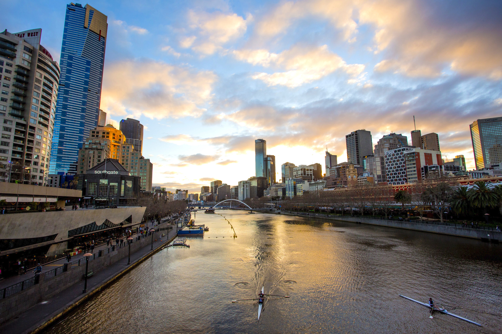

Města
Canberra
Canberra je hlavní, ne však největší, město Australského společenství. S populací 323 056 obyvatel se jedná o největší vnitrozemské australské město. Canberra se nachází na jihovýchodě státu, v Teritoriu hlavního města Austrálie (ACT). Město je umístěno 280 kilometrů jihozápadním směrem od Sydney a 660 kilometrů severovýchodním směrem od Melbourne.

Místo, kde se Canberra nachází, bylo vybráno jako místo pro hlavní město Austrálie roku 1908, aby došlo ke kompromisu mezi soupeřícími dvěma největšími městy, tedy mezi Sydney a Melbourne. V mezinárodní soutěži o design města zvítězil návrh dvou chicagských architektů Waltera Burley Griffina a Marion Mahony Griffinové. Stavba započala v roce 1913. Návrh manželů Griffinových kladl důraz na geometrické motivy, jako kruhy, šestiúhelníky a trojúhelníky. Ve městě se nachází také významné plochy přírodní vegetace, díky kterým Canberra získala přezdívku bush capital.
V Canbeře sídlí Australská vláda, Australský nejvyšší soud a mnoho vládních orgánů. Město je také centrem mnoha sociálních a kulturních institucí národního významu, jako jsou Australská národní univerzita, Australské národní muzeum či Australská národní knihovna.
Sydney
Sydney je nejrozlehlejší a nejlidnatější město v Austrálii, jde o hlavní město Nového jižního Walesu. Sydney se nachází na severovýchodním pobřeží Tasmanova moře. Se svou populací přesahující 4,5 milionů obyvatel (v metropolitní oblasti) je nejlidnatější obcí v Oceánii. Obyvatelé Sydney nemají v češtině jednoslovné pojmenování. V angličtině se ujalo slovo "Sydneysider" - toto slovo vzniklo z kosmopolitní a mezinárodní populace tohoto města.

Sídlo první britské kolonie v Austrálii, Sydney, bylo založeno 26. ledna 1788 u malého zálivu Sydney Cove Arthurem Phillipem. Město je vystavěno na kopcích okolo členité a hluboko do pevniny zařezané zátoky Port Jackson, která se nyní spíše nazývá Sydney Harbour a nad níž se dnes tyčí Sydney Opera House a Harbour Bridge. V okolí metropolitní plochy se rozprostírají národní parky a pobřežní regiony, které obsahují spousty zátok, řek a pláží, včetně známé pláže Bondi. V městě se také nachází spousta parků, mj. i známý Hyde Park, či Royal Botanical Gardens (Královské botanické zahrady).
Loughboroughská univerzita označila Sydney na základě svých průzkumů za Světové město. Toto ocenění potvrzuje, že je Sydney světovým centrem umění, módy, kultury, zábavy, vzdělávání a turismu.
V Sydney se také konaly některé hlavní mezinárodní sportovní události, jako například Hry Commonwealthu v roce 1938, Letní olympijské hry 2000, finálový zápas Mistrovství světa v ragby 2003 a Světové dny mládeže 2008. Hlavní letiště v Sydney je Sydney Airport.
Melbourne
Melbourne je hlavní město australského státu Victoria a po Sydney druhé největší město v zemi. Počet obyvatel dosahuje 4,6 miliónu. V letech 1901 až 1927 bylo hlavním městem Austrálie. Je důležitým ekonomickým a průmyslovým centrem.
Město leží na jihu Austrálie i Victorie, na březích řeky Yarra. Jižní Melbourne je omýván zátokou Port Phillip. Centrum zaujímá City of Melbourne. Na 36 km² zde žije 46 000 obyvatel.